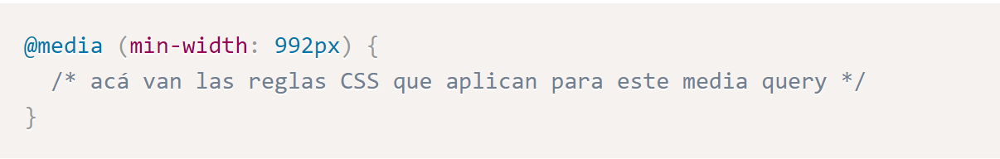

Sitios Responsivos con Media Queries
En la actualidad se ha venido expandiendo el uso de los dispositivos móviles como celulares y tables, con ello llega una gran cantidad de diferentes tamaños, lo que representa un reto a la hora de diseñar paginas web ya que se debe usar lo mejor posible el espacio disponible.
Un media query se declara utilizando la palabra clave @media seguido de una expresión entre paréntesis y un bloque de reglas CSS como se muestra a continuación:

Se han definido ciertos valores para determinar el tipo de pantalla que se está usando:
Hasta 575px son teléfonos móviles en modo vertical.
De 576px a 767px son teléfonos móviles en modo horizontal.
De 768px a 991px son tabletas.
De 992px a 1199px son pantallas de escritorio normales.
1200px o más son pantallas grandes como televisores.
Mobile first
Para aprender cómo podemos crear nuestra propia organización de los elementos en pantalla, debemos primero entender cómo los navegadores procesan el código HTML. Los navegadores consideran cada elemento HTML como una caja. Una página web es en realidad un grupo de cajas ordenadas siguiendo ciertas reglas. Estas reglas son establecidas por estilos provistos por los navegadores o por los diseñadores usando CSS.
Medidas para mejorar el SEO
El SEO proviene de las siglas en inglés 'Search Engine Optimization', y se entiende por todas las acciones que permiten una mejora natural en los resultados de las búsquedas. O, dicho de otra manera, es una mejora de visibilidad en los buscadores, eso sí, siempre de forma orgánica.
Trabaja tu estrategia de palabras clave: Sí, es un básico, pero nunca está de más recordarlo: una buena selección de palabras clave es un paso absolutamente fundamental para que tu estrategia de SEO funcione.
Estructura las páginas con encabezados: Los encabezados de una página (h1, h2, h3, etc.) son muy necesarios para estructurar los contenidos de tu web, tanto de cara a los motores de búsqueda como a los usuarios.
Optimiza las imágenes: A la hora de optimizar el SEO on page, solemos centrarnos en los elementos que incluyen textos. Pero las imágenes también son esenciales para mejorar el posicionamiento SEO.
Prepara tu sitio web para los móviles: Hoy en día, la mayoría del tráfico web procede de móviles, así que este paso es absolutamente esencial. De hecho, Google penaliza a las páginas web que no cumplen este requisito.
Incluye un mapa de tu sitio para los motores de búsqueda: Los mapas del sitio son la forma más sencilla de asegurarse de que las arañas de Google y otros motores de búsqueda rastrean e indexan tu sitio de manera adecuada. En ellos, indicaremos las diferentes páginas que componen el sitio web y la manera en que están estructuradas.
Cuida los tiempos de carga: Una página que tarda demasiado tiempo en cargarse da lugar a altos índices de rebote. Además del tráfico perdido y de la frustración que esto genera a los usuarios, también puede hacer que el posicionamiento SEO de una página empeore.
Controla tus palabras clave: Por lo general, tendemos a pensar que las palabras clave son un elemento exclusivamente del SEO on page, pero es un error. A la hora de generar enlaces externos a tu sitio web, tendrás que ser estratégico sobre qué palabras clave se emplean en el anchor del texto para que encajen con las que tú mismo has seleccionado.
Arregla los enlaces rotos: Seguramente a muchos nos ha pasado que estamos visitando un sitio web para luego terminar en una página de error 404. Estos enlaces rotos no solo son molestos, sino que también pueden dañar tus esfuerzos SEO.